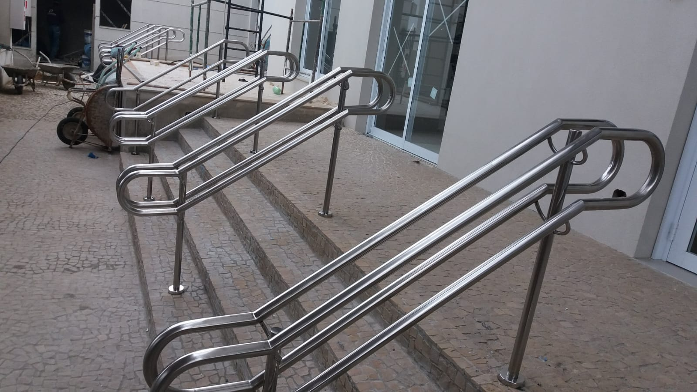
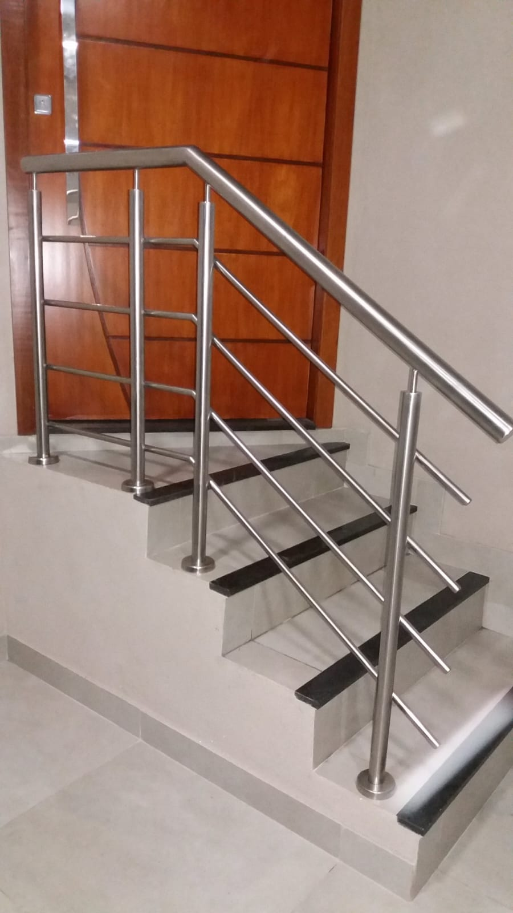
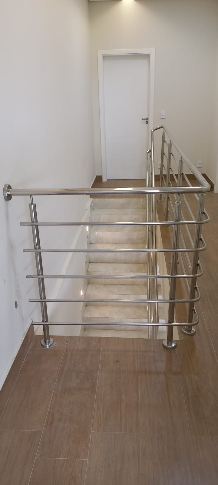
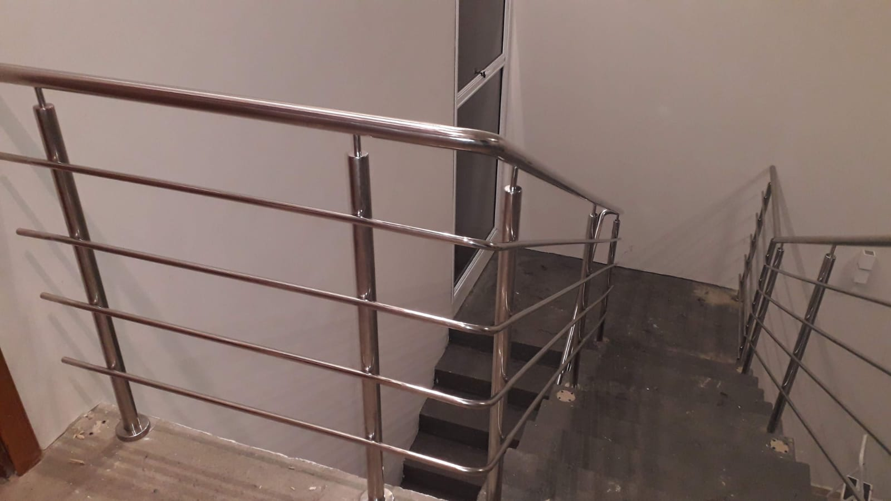
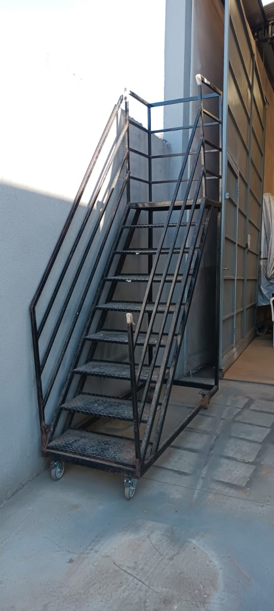
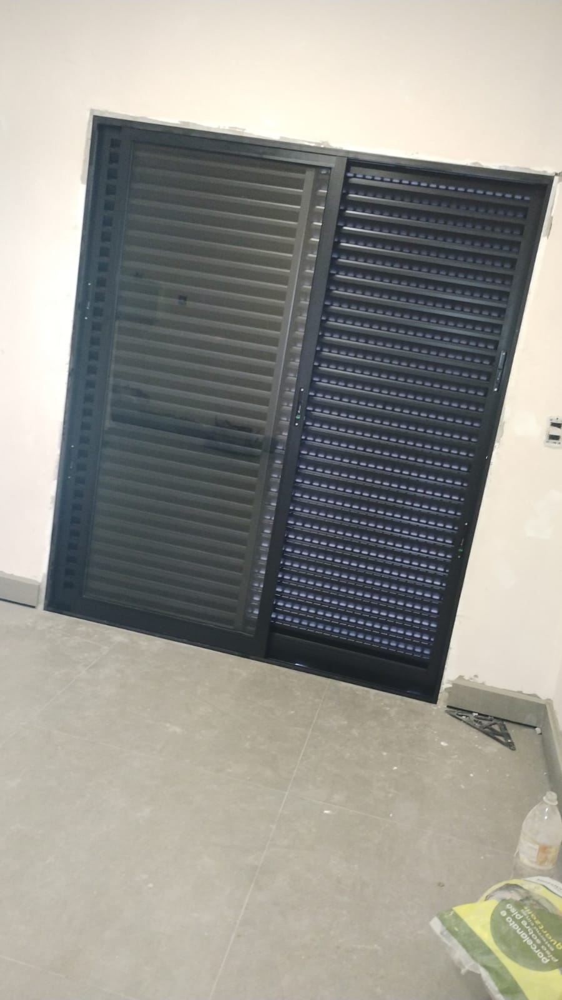
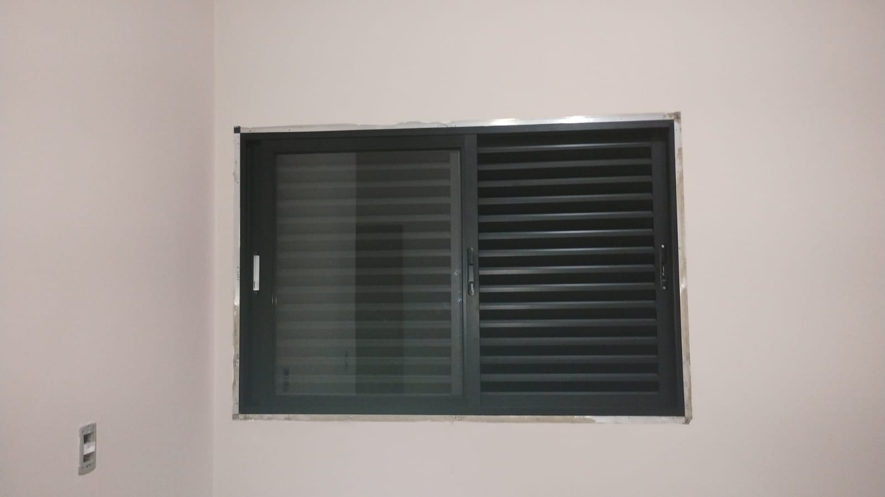
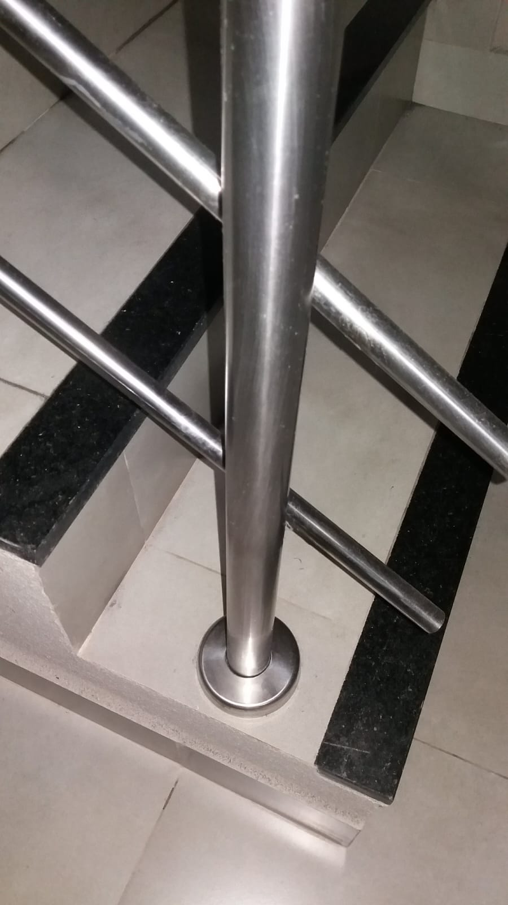
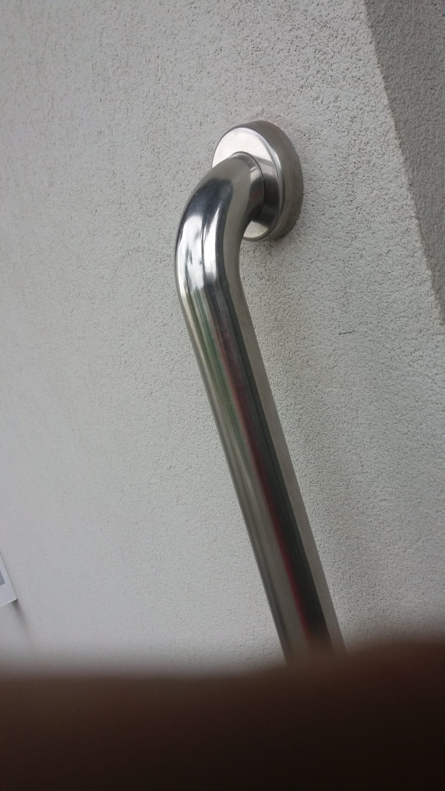
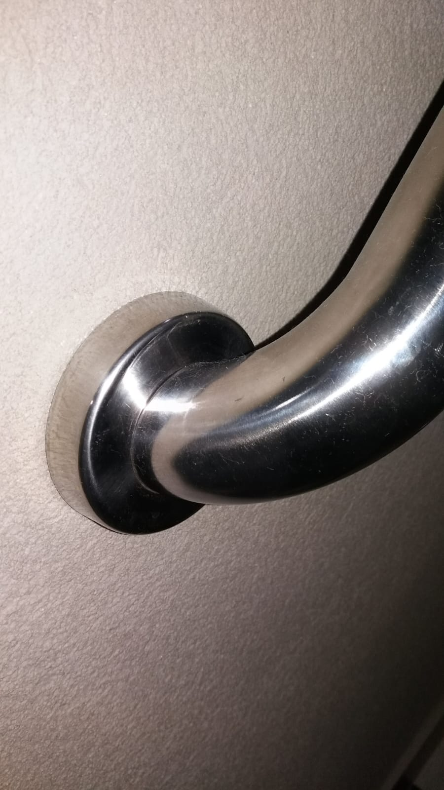

Desde 2016 fabricando e instalando com precisão
Inox e alumínio
Especialização em materiais que valorizam durabilidade e visual limpo.
Projeto sob medida
Cada peça nasce para encaixar no uso, no espaço e no estilo da obra.
Atendimento direto
Orçamento por WhatsApp, telefone e atendimento presencial.
Inox, alumínio e serralheria com presença forte e acabamento impecável.
A Art Corrimão e Serralheria transforma projetos em peças sob medida com segurança, resistência e estética. Entregamos corrimãos, portões, grades, guarda-corpos, mesas e esquadrias de alumínio para obras residenciais e comerciais em Franca e região.

Obras em inox, alumínio e serralheria
Segurança em primeiro lugar
Guardas, corrimãos e estruturas com foco em proteção e firmeza.
Acabamento que valoriza
Peças pensadas para unir robustez, elegância e longa vida útil.
Especialidades da marca
Soluções metálicas que unem resistência, segurança e presença visual.
Do detalhe arquitetônico à estrutura funcional, a Art Corrimão entrega fabricação e instalação com leitura técnica do projeto e acabamento caprichado.
Corrimãos
Peças em inox e metal pensadas para fluxo seguro, conforto no uso e visual contemporâneo.
Guarda-corpos
Proteção para sacadas, escadas e mezaninos com estrutura firme e acabamento limpo.
Portões
Projetos sob medida para valorizar fachadas, controlar acesso e reforçar a segurança do imóvel.
Grades
Estruturas metálicas com desenho funcional para proteção de janelas, muros e áreas externas.
Mesas e peças especiais
Soluções personalizadas em metal para quem quer mobiliário marcante e durável.
Esquadrias de alumínio
Estruturas leves, resistentes e versáteis para compor projetos residenciais e comerciais.
Mostruário de serviços
Trabalhos executados com acabamento limpo, segurança e peças sob medida.
Uma seleção de corrimãos, guarda-corpos, escadas metálicas e esquadrias de alumínio para mostrar a variedade de soluções entregues pela Art Corrimão.
Corrimãos em inox
Áreas externas e acessos comerciais

Residencial
Escadas internas sob medida

Guarda-corpos
Proteção com visual moderno

Escadarias
Linhas contínuas e firmes

Estruturas metálicas
Escadas e plataformas funcionais

Alumínio
Portas e venezianas

Esquadrias
Janelas de alumínio

Detalhes
Fixação e acabamento

Corrimão de parede
Suporte seguro para circulação

Acabamento inox
Peças polidas e encaixe limpo
Quem é a Art Corrimão
Uma serralheria criada a partir de sonho, experiência prática e compromisso com o resultado final.
A empresa nasceu da vivência real no setor e consolidou uma atuação focada em soluções personalizadas. Cada projeto é pensado para atender a necessidade do cliente com atenção à segurança, ao encaixe técnico e ao acabamento que faz diferença no dia a dia da obra.
Com atendimento próximo e produção especializada em aço inox e esquadria de alumínio, a Art Corrimão atende projetos residenciais e comerciais com profissionalismo desde 18/07/2016.
Foco da operação
Projetos que precisam funcionar bem e durar.
- Fabricação sob medida conforme o espaço e a necessidade.
- Materiais e acabamentos alinhados ao uso residencial ou comercial.
- Visual robusto, limpo e coerente com a arquitetura do ambiente.
- Comunicação rápida para orçamento e andamento do projeto.
Como funciona
Do primeiro contato à entrega, o processo é direto e transparente.
Uma jornada simples para facilitar orçamento, alinhamento técnico e execução com mais confiança.
Você apresenta a necessidade
Envie medidas, fotos, referência ou descreva o que precisa por WhatsApp, telefone ou atendimento presencial.
A equipe orienta a melhor solução
Avaliamos o tipo de peça, material e aplicação para indicar um caminho coerente com o seu projeto.
Fabricação sob medida
A produção é conduzida com foco em firmeza estrutural, estética e compatibilidade com o ambiente.
Instalação e acabamento final
A entrega busca deixar a peça pronta para uso, valorizando a obra e reforçando a sensação de segurança.
Contato e localização
Fale com a equipe e solicite seu orçamento.
Se você precisa de corrimão, portão, grade, guarda-corpo, mesa metálica ou esquadria de alumínio, a Art Corrimão está pronta para atender em Franca/SP.
Endereço
Avenida Abrahão Brickmann, 2905, Jardim Luiza 2, Franca/SP
WhatsApp
(16) 99133-1478
Telefone fixo
(16) 3704-7663
Horário de funcionamento
Segunda a sexta, das 7h às 17h. Sábado, das 7h às 15h.
Orçamento pelo WhatsApp
Preencha os dados e abra a conversa com a mensagem pronta.